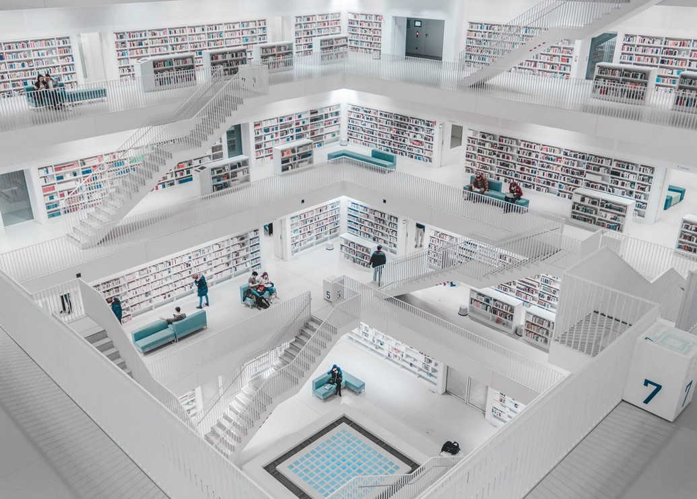

July 13th 2020, 11:41:51 pm EDT

Listen
Of course,
let us ask what their regrets are...
We are after all the future generation,
to those that came before us.
Therefore we have insight,
and certainly have regrets.
We regret;
wars, poverty, hate and stupidity.
We want World Peace,
because a single Human Life is more Sacred than all the gods put together,
because borders are stupid and war is hell,
because ongoing weapons manufacturing is evil.
We want the End of Poverty,
because money should only be used to help a person and not make them worse,
because no one should be denied mental, dental or medical care,
because not a single Human Being should ever go hungry or thirsty.
We want the Age of Wisdom,
because people must learn how to think before being told what to think,
because the Modern Human being must first catch up with Knowledge in Beloved Books,
because we must put an end to making mistakes that can otherwise be avoided.
The World will not grow if Human Beings are prevented from Meaningful Education.
The World will not grow if People are too scared, or too hungry, or too tired to learn.
The World will not grow, if You, and I, and Everybody Else fails to Honor the Future Generations.
As many evil forces as there are,
they will give up the moment they see that their lies can't move crowds anymore.
Moving against reality,
commits the followers to the forgotten side of history.
Standing up for Truth and Authenticity,
fills us with Light of Wisdom, and Love of Humanity.
You never know,
the first day,
when you become ready,
to reinforce, or add a new article,
to a document that will define Humanity for all Generations.
We can't be sure if this document exist yet,
perhaps you will begin writing it,
perhaps your article will be the opening article,
and yours, the first signature.
There are to many borders, My Friends,
and too often money is being used for harm, where it was invented for good.
Our World, with Our Love and Our Blessing,
must take another Deep and Long Breath,
and Exhale in Blooming Changes all around.
Practice, take out your journal, and scribble to no end,
many high and mighty laws printed over and over on paper will not hold up forever.
Humanity never moved toward some Economic Paradise,
it has always moved towards Goodness and Love.
It has moved slowly, slowed down by poverty of so many,
slowed down by borders,
and people not yet ready to learn how to think before they are told what to think.
But it has moved with unlimited strength,
sanding down to dust all that stood in the path of Good Ideas, and Goodness, and Love.
Do not accept wrongs, on paper, or law, or the red faces of those moving against the grain of reality,
do not assume that the wrongs that stand today, will not be erased tomorrow.
Proudly, nobly, respectfully, deep in thought,
take time off, and reach out to world's best selling non fiction.
My Friends,
May you laugh, may you celebrate, may you admire,
and learn from; and forgive mistakes leaving them to the past.
July 12th 2020, 9:34:47 pm EDT

Listen
I dreamt I was tumbling through time,
and I had no control over which fragments I see.
There was a mother writing a letter to a famous movie star,
she was asking him to stop making movies, because her boy didn't comeback from war.
And it worked,
and she wrote many letters.
There was a lot of shocked artists and actors,
they had no idea how they shaped young impressionable minds.
Boys wanted to go to real war,
to be like the imaginary heroes they saw on TV.
And then I struggled in my dream, because my bullies were clearly ill, they were not all there,
but World's Systems of Justice do not differentiate between the ill and the healthy.
And so a person made permanently ill in their mind by poverty,
is seen equal to a man of knowledge, insight, intelligence.
But the ill have little freedom of choice,
they need therapy, and safety, and good homes, and hope, and dreams.
To punish someone who couldn't grow up, didn't know to learn,
for something that they weren't sure they were doing,
and then to send them to a hopeless place without a hope of healing,
without any hope of rehabilitation... is wrong.
If they can't walk among us, if they are permanently ill,
then build special schools for them, schools that bring hope.
We mustn't punish them more than life already had,
our humanity depends on everyone’s humanity.
And I saw Mr. Pirsig on his motorcycle with his boy,
the wind in his face representing the cutting edge of reality.
He was worried that his Metaphysics is not real philosophy,
it was not going to be taken seriously.
The answers they discovered on road they traveled and experiences they shared,
created the Body of Knowledge that provided them with the forward momentum they needed to move ahead.
I dreamt that Pirsig was just talking bout Authenticity, Nobility and Dignity,
and Knowledge and Wisdom, and Wise Intuition.
He is unafraid to show us how vulnerable Philosophers are,
that all it takes is ideas worth sharing, once or twice.
Anybody can be a philosopher,
we will each be heard.
All these strange fragments added together - to remind us that the World is Not Static,
that it grows, moves, changes, and cares not to stop for things writ on paper.
Advancements in Psychology... the trailer to the movie about Philip Zimbardo work - alone,
should invalidate laws and behaviors previously thought acceptable.
Humanity must grow, our cultures must drive us all forward,
we must never assume that the world we are born into is a masterpiece.
And we must never let ourselves think,
that others are in charge - it is our world, it belongs to us all.
To make informed decisions,
we require knowledge, wisdom, foresight, insight, a sense of belonging.
Without knowledge, we will not be able to see right from wrong,
nor will any of our decisions do our elder selves justice.
Access to well grounded knowledge is not difficult,
internet lectures - alone - may even suffice, but best selling non fiction audio books solve it completely.
Humanity must not fall behind on growing up,
the longer the delay the greater the injustice.
Read and Listen to you books, my Friends,
inherit the lifetimes of knowledge within.
We can't send people to prison without any hope of rehabilitation,
for uninformed decisions that came on a whim.
And we can't allow mere Practice of Law without Functional Rehabilitation,
and above all Meaningful Education and Universal Basic Income that truly lifts people out of Poverty.
We Are The People,
we outgrew borders long ago, we are One Family on a Lonely Blue Earth.
We must learn to catch up with what is worthy of knowing,
we can use Science, or Love, or both, or the Leading Edge of Instinct powered by our Humanity.
But we must continue building this world,
each generation must make improvements and never stop.
Those who stand in power today,
are to soon gracefully surrender to the better wisdom of the new generation.
To preside is to wisely wait whilst the new generation becomes worthy of the position,
and to quietly step down, and put whatever wisdom was discovered to the books of history.
To preside, means not, to continue repeating mistakes because they are on the books,
and therefore one will not be punished.
There are only two sides to history, and only fools think it is the winning and the losing one,
the two sides as seen by future generations is the Wrong One, and The Noble One.
Let us all rise to the challenges of wisdom,
and making lasting and meaningful contributions to the Human Family.
Let us not be lost to the wrong side,
let us not be passed over by the books of history,
let us help wisdom propagate.
Let us stand up to every corner and every challenge,
and let us speak out against the wrong, the mistakes, the incomplete, the unfinished.
Let us not accept half measures, or good enough, or status quo,
or the lowest common denominator minimums that get commited to law books.
Let us remember who we are,
and how Noble The Human Being.
Let us stand upright,
in Authenticity, Dignity, Wisdom and Compassion.
July 11th 2020, 10:43:04 pm EDT
Listen
While Constitutions and Declarations,
age and get amended, to become other than intended.
Most beloved poetry is writ in stone,
loved and celebrated, and hard to forget.
So, let us write poems to celebrate every era,
and each new idea worthy of us and the modern times.
Humanity has always faced great challenges,
and the greatest challenges moved us the most.
Today, we must fix Education for all,
and it has to result in creating Wise Great Minds.
We have to fix World Poverty,
as it too often destroys minds before they can even put up a fight.
And we have to create a clearer picture of the world,
poems that reveal problems before they come into being.
Above all we have to help Young People,
help them to understand the world better.
Help them gain early insight,
so that they are not easily manipulated.
At the very least,
we have to explain;
How borders divide,
and how divided, we are made to fight.
How easy it is to dress ignorance in authority,
how some principals, or teachers, or parents, never cared, and never will.
How poverty is not the fault of the children born into it,
but a mark of broken and immature and selfish politics.
How talent, and genius, and genes are a stupid myth for poor angry little men,
how self education is far more meaningful, and how and noble.
You, my Dear Readers,
You are full of Great Ideas.
The things you wish you knew when you were younger,
are more important than you think.
Those are the ideas that will create
unforgettable poetry.
Please, pick up a pencil, pick up a keyboard,
and rhyme or arrange, impress with words, with inspirational letters.
The ideas you hold dear,
make you a philosopher, a poet, and artist.
The ideas you hold dear make you a teacher,
Please, help the world learn.
July 10th 2020, 8:36:16 pm EDT

Listen
Hey! whew,
it's only eight,
and here I was worried,
that I am going to be late.
Today is Friday,
and on every Friday I must look,
for new ideas,
to add to my fancy Warrior Book
It is a book,
made out of videos,
and some ideas,
don't have enough of those.
Last week,
I searched for "Ladies Fast Draw",
but it only returned three videos,
last time I saw.
I also tried Women Sharp Shooting,
and Compound Bow,
but something didn't fit,
the chapter just didn't flow.
I am searching for
inspirational things,
ideas that bring friends together,
and give them wings.
I wrote that book to show all;
that we all start slow,
but we can all become mighty,
so as long as we give it a go.
All too frequently we assume,
that we have to have talent.
and all the steps we take,
must be naturally gallant.
But the truth is,
that we must fail to get there,
effortlessly succeeding at anything,
is as boring as rare.
No need to hurry,
we can learn really slow,
the most important thing,
is that we grow.
July 9th 2020, 11:26:34 pm EDT

Listen
I always try hard to learn something new,
so that my elder self can mumble "I grew."
I try to listen to a non-fiction book or two,
to update my general world view.
And I do computer programming and research too,
I have lots of bookmarks in my queue.
I am trying to write programs as if I had a crew,
so I stick to simple systems where I can think things through.
Learning Life, and Programming somehow fits me like a shoe,
I'll have to make a list of the books and papers I read through.
I never have to try to look for something new,
there are too many beautiful things to get bored, or blue.
I like learning about things that are most Human and true,
trying to figure our what our elder selves wished they knew.
Someday, I would like to write a book to help young people get a better world view,
something short and beautiful that they can quickly finish, slam shut, and say "Who knew?"
July 8th 2020, 8:57:32 pm EDT

Listen
Summer and Winter, Spring, and Autumn are my favorite seasons,
but today, Winter came to mind; for many reasons.
For one, it is Summer, a Hot Summer, Heatwave in full swing,
and I can't believe what great relief; a little snowfall would bring.

And I found a winter photo of an expedition to a near by store,
I look thrice my size, I can't even imagine how many layers I wore.

Then I remembered when back in 2014 the Polar Vortex was all the talk,
I was so excited to dress up and go on a long walk!

But, my favorite memory is riding my bicycle and hitting a patch of ice,
I fell sideways upside-down, and did a little looptie-loop, twice.

I landed perfectly flat with a winter splat kicking up the downy flake,
and I lay there a bit muttering, "What a story this will make".

I love Blinding Summers, and Rainy Autumns, and Spring when all the flowers grow,
but I am a huge fan of Winter and all that bright white snow.
July 7th 2020, 11:39:10 pm EDT

Listen
Without learning we cannot grow up,
and without teaching the world cannot progress.
It does not matter where you start your journey,
be it top of the world, or the very bottom, or somewhere in the middle.
Wherever you start, you must immediately begin moving forward,
step after step, find what moves you, use it to grow up.
Grow to create a solid thought, or dream, or aim, or understanding,
and get on top of it, and start building the next thing.
The road to catching up with everyone else is very short,
once you are there, like everyone else, you take off in your own unique direction.
We must let go of beginnings and ends,
and questions of lengths of road we must travel.
We must let go of things that we can't finish in time to enjoy life,
empires ought be build by generations of visionaries, not a single inspired being.
We must put majority of our existence towards a happy meaningful life,
not struggle, or war, or fear, but simple meaningful beautiful happiness.
We must not forget about the importance of Meaningful and Enlightening Education,
the world is not able to give all a safe home but we can learn to build one.
And once we learn, and find peace in life,
we should consider becoming teachers.
By teaching people, by giving them the right tools, by helping them see how to accomplish great deeds,
we also grant them the path, to get where they will bloom at their healthiest, and thus Find Hope.
Inadequate education is one of the greatest barriers to a healthy existence,
but it is also the weakest barrier, as it is removed with simple audio-books.
We should encourage people to search for best selling non fiction,
and inherit both Lessons, and the Culture of Successful Great Beings.
All the problems we face are Human Problems, and thus the solution is in Our Hands,
as humans we know that the source of our Powers is in our Minds.
That is where must begin our Lives,
by making our minds Strong, Noble, Authentic, Unbreakable; Dignified.
Let the self correcting nature of inheritance of knowledge from all our Beloved Great Beings,
be the start of our battle against all the problems that plague our Civilization and Cultures.
Without wisdom all serious problems bear negative consequences,
consequences that help to multiply problems until there seemingly seems to be no solution in sight.
But that is an illusion,
instead of building more prisons to contain minds sickened by poverty, let us teach meaningful wisdom and knowledge.
We must learn to prevent minds from fracturing, and from getting lost, and from not growing up,
we must build a better world for all.
To build a better world we must fearlessly challenge ourselves to success,
to wisdom, to knowledge, to noble pursuits of excellence.
And then boldly teach,
all the lessons that moved us.